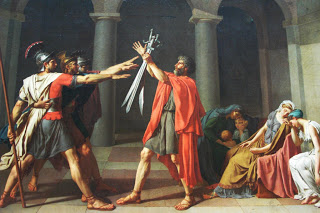
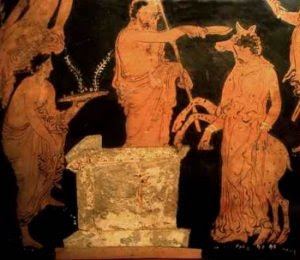
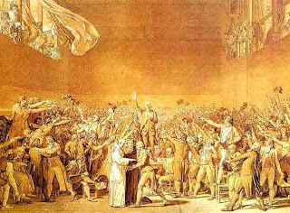
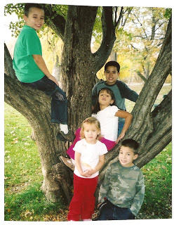

The State uber alles: Roman patriarch Horace offers his sons as a sacrifice for the State, as rendered by18th Century revolutionary French artist Jacques-Louis David. The heroic, stiff-armed pose offered by the sons was to become a salute favored by totalitarians of various hues.
"Patriotism is deeper than its symbolic expressions, than sentiments about place and kinship that move us to hold our hands over our hearts during the national anthem. It is putting the country first, before party or personal ambition, before anything."
Presumptive Republican presidential nominee John McCain, speaking the authentic language of totalitarian nationalism.
Gary Qualls of Crawford, Texas would appear to be the kind of patriot who would earn John McCain's approval. I sincerely hope Mr. Qualls is a better man than that.
In was mid-November 2004 when Qualls learned that his 20-year-old son Louis had been killed in Iraq. Gary had just finished reading a letter from Louis when his youngest son David told him that three Marines were waiting on the doorstep.
The Marines, of course, were a casualty notification team. They had come to tell Gary that his oldest son -- an honor student, star athlete, martial artist, and devout Christian -- would never have sons of his own.
He had been killed in Iraq by somebody else's son -- somebody who saw Louis not as a liberator practicing altruism at gunpoint, but as a foreign invader to be expelled from his home country.
A Marine veteran himself, Gary had come close to death in a previous exercise in lethal humanitarianism in Bosnia. Some of his closest friends had been killed there. But nothing in his eventful life had prepared him for the news that his son was gone.
"I walked up to the front door," Gary later recalled, "and all I could do was look through the glass and stand there and look at them and I knew what was going on and I said `No... Not my baby!'"
Overcome by grief, this strong, proud man was driven to his knees by the burden of unbearable sorrow that descended on him in that moment.
At some point, Gary's grief turned into something markedly different. He was infuriated by the way another parent, Cindy Sheehan, reacted to the death of her son Casey in Iraq.
When Mrs. Sheehan traveled to Crawford in August 2005 to conduct a protest in front of the vacation home of the president who had sent Casey and Louis to die needlessly in Iraq, Gary -- backed by the usual assortment of jelly-belly jingoists and computer commandos -- decided to mount a counter-protest: Where Mrs. Sheehan and her supporters had created "Camp Casey" to symbolize their desire to end the war and spare other parents the grief of losing sons and daughters, Qualls and his associates sought to create "Camp Qualls" -- a symbol of their willingness to offer their children, and those of other parents, on the altar of Bush's war.
"If I have to sacrifice my whole family for the sake of our country and world, [and for] other countries that want freedom, I'll do that," insisted Qualls.
This stands in pronounced contrast with his first, and more honest, reaction to the news of Louis's death. At that moment, Mr. Qualls didn't turn to his youngest son David and say: "OK, it's your turn; pack your things and leave with these nice fellows from the Marine Corps."
No; his reaction was to collapse beneath the unspeakable agony known only to those who have lost a child. He was thrown from his feet when reality suddenly shifted polarity and the natural order was reversed: He would bury his son, rather than being buried by him.
That was his honest response to the horrible news, before the demands of "patriotism" dictated that he "revise and extend" his reaction.
Mr. Qualls has my unqualified sympathy, and my earnest prayers that God will comfort and strengthen him. But I can't credit his claim that he would be willing to sacrifice his family on behalf of the State that rules us, and strangers he has never met and will never know.
A willingness to make "sacrifices" of that kind is not commendable; it is utterly monstrous. All variants of totalitarian "patriotism" -- including that promoted by our rulers today -- require that their subjects cultivate that monstrous disposition. Which is to say, a disposition suitable to service of what Nietszche called "the coldest of all cold monsters."
Thomas Fleming of the Rockford Institute, one of the few authentic classical scholars writing about contemporary politics, has pointed out that sound morality (as understood by Aristotle and the Christian tradition) begins with responsibilities to the most intimate association, the family, and then works outward to more distant relationships -- neighborhoods, larger communities, and then the country. To invert that order, or ignore one's primary responsibilities, is to reveal one's self to be "that `tribeless, lawless, hearthless man' denounced by Homer," Fleming observes.
The kind of "patriotism" embraced by John McCain rests on the same inversion of the moral order Fleming describes: Country (that is, national state) "before anything," or, as the Germans put it in the anthem of the Reich, "uber alles." These perverse priorities were not unknown to "heroes" of pagan antiquity, of course. Notes Fleming: "The hero's dilemma is portrayed starkly in in the case of Agamemnon, Homer's `lord of men,' who could not launch his divinely sanctioned expedition against Troy until he had first sacrificed his daughter."


The sacrifice of Iphigenia was necessary to placate an offended Artemis, who had sent an adverse wind to bottle up the Greek fleet. The cruelty of Agamemnon's ambition can be seen in the ruse he employed to lure his daughter to her death: He told her that the altar on which she was to be sacrificed was to be used in her marriage to Achilles. In other words, he used his daughter's happy anticipation of children as the bait in a trap intended to kill her, so that he could get on with the worthy project of killing the sons and daughters of others.According to the story, Iphigenia was transported safely to a distant island, and a suitable animal was slaughtered in her place. The Trojan War -- intended to be a quick and glorious punitive expedition -- became a lengthy and pointless debacle, as wars generally do.
A similar tale of wartime child sacrifice is presented in Livy's account of the Horatti, or sons of Horace. During one of the countless conflicts in Rome's early expansion, Horace's triplet sons volunteered to meet the Curiatti triplets in a variant on single combat: The victors would win, on behalf of their city-state, possession of a small and by now long-forgotten village.
The battle claimed two of Horace's sons. The victory celebration claimed the life of one of his daughters, who was killed by the surviving brother for being romantically involved with an enemy of Rome.
French artist Jacques-Louis David, who became one of the most important propagandists for the Revolution, used his rendering of the Oath of the Horatii (see the illustration at the top of this essay) to encapsulate the "virtues" demanded by the patria: "Patriotism, fraternity, and martyrdom," as exemplified by Horace, who was willing to surrender his family for the State.
The stiff-armed pose of Horace's sons "was to become the standard manner of taking the revolutionary oath," wrote historian Simon Schama in Citizens, his magisterial account of the French Revolution. And many of those who took that oath were more than willing to kill those who didn't embrace the Revolution's priorities, such as the traditional Catholics of the Vendee.


Revolutionary oath, stiff-armed salute: David's influential rendering of the "Tennis Court Oath."On March 12, 1793, a Jacobin press gang visited St. Floret in the Vendee to inform them that the Revolution required their children as conscripts in a war against other European Catholics. They had arrived to claim their quota of the 300,000 men, aged 18 to 40, that Paris intended to conscript into the revolutionary army.
Unwilling to fight, kill, and die on behalf of what they regarded as a God-less political system, the Vendeans were more than willing to do battle on behalf of their children and their freedom to worship: They fell upon the draft-nappers with pitchforks, cudgels, and any other farming implements that could be employed as weapons.
"The Vendeans resented the fact that their able-bodied young men should be taken far away from the farms that needed their labor to fight men with whom they had no quarrel, on behalf of those who were implacably opposed to every belief they had," observes British historian Michael Davies.
The Vendeans fought on their home soil on behalf of their kinfolk, their neighbors, and those with whom they shared a religious communion. This is true patriotism, whether or not one approves of it. Those who assailed them on behalf of the Jacobin regime did so in the name of a murderous abstraction called the State, and they displayed unstinting zeal in shedding what their hymn of hate called "impure blood." They often displayed demonic creativity in their labors, drowning thousands of bound Vendeans in the Loire River in what they called "Republican Baptisms."
It is the Jacobin concept of State-centered "patriotism" that prevails today, rather than the family-centered, telluric patriotism displayed by the Vendeans, who fought to hold back the State's assault on the Permanent Things.
American Jacobinism, circa 1942: Schoolchildren participate in the Pledge of Allegiance by using the American variant of the same Jacobin salute favored by Italian Fascists and German National Socialists (left). Below, orphans and other poor children display the same gesture en masse during the Pledge before watching a movie in 1938.

More than 250,000 Vendeans were slaughtered by Jacobin patriots, just as hundreds of thousands of Southerners were killed -- most of them in defense of home, hearth, and immediate community, not chattel slavery -- in Lincoln's Jacobinical war of consolidation. Whatever his weaknesses, Robert E. Lee is worthy of respect for his refusal to lift his sword against his "country" -- Virginia, home to his family and everything he valued -- on behalf of the State, something that can neither be seen nor felt but can kill millions without remorse.
The more abstract the object of allegiance, the more dangerous that attachment becomes. The grander a ruler's ambitions, the deadlier they become.

Today our rulers -- like the Soviets a generation ago -- preach a gospel of universal liberation through the supposedly skilled application of deadly force. And they expect that we will be willing to offer our children on behalf of "our country and the world," as Gary Qualls professed to be.
"Patriotism," we are and will be told, requires nothing less.
This is "patriotism" of the variety displayed in Agamemnon's sacrifice of his daughter, and Horace's willingness to sacrifice his sons.
A more suitable example of genuinely patriotic sacrifice was displayed by the defiant Antigone. When asked by Creon, the evil ruler her brother died trying to overthrow, if she had defied a royal edict by dressing and properly burying her brother's body -- which was forbidden on pain of death -- Antigone replied:
"Yes [I violated that decree], for it was not Zeus that had published me that edict ... nor deemed I that thy decrees were of such force, that a mortal could override the unwritten and unfailing statutes of heaven. For their life is not of to-day or yesterday, but from all time, and no man knows when they were first put forth.... [I]f I am to die before my time, I count that a gain: for when any one lives, as I do, compassed about with evils, can such an one find aught but gain in death? So for me to meet this doom is trifling grief; but if I had suffered my mother's son to lie in death an unburied corpse, that would have grieved me; for this, I am not grieved."
Antigone understood that no mortal "law" can nullify God's eternal laws of justice, which dictate that we are to place our loyalty to family above that we give to any government or ruler. She died a horrible death in testimony of her understanding that when the interests of State and family conflict, the State comes in a very poor second -- such a distant second, in fact, that it would take a telescope larger than Mt. Palomar's to see it.


This is my country, or at least the most important part of it (clockwise, from upper left): Isaiah Athanasius, William Wallace, Katrina Antigone, Jefferson Leonidas, and Sophia Faith Grigg (click to enlarge).
My first and unconditional allegiance is to God. Immediately below it comes my loyalty and responsibility to those whose faces I saw over my cradle, those who shared the home in which I grew up, and those whose faces I expect to see over my deathbed. To that number I can add a few genuine friends who have become family in a sense that is something less than blood or adoption, but more than a metaphor.
I love and cherish many things about the United States of America. But the "country" that commands my allegiance is described in the paragraph immediately above.

On sale now!
Dum spiro, pugno!
43 comments:
Very insightful analysis of Qualls psyche. As a father of 3 sons, (and a beautiful daughter) I find it very, very difficult to understand how Qualls can offer up his own. Will, you hit it EXACTLY on the head by exposing his true (and believable) emotion-getting dropped to his knees. Why feign the lie for the honor of being a "super patriot"? I guess the level of perceived patriotism rises in direct proportion to the number of offspring offered for sacrifice.
When will we say enough? When will we deny the thieves running the government that they may not have our money, our property, and our families?
Until we do this, we will have many more visits by those "nice Marines".
The fact is that no one's life is too valuable to sacrifice in the quest of someone else's goal. All of this is disguised as patriotism, honor, duty. It sound so noble, but it is so base. We lie so we can murder, murder so we can steal, steal to satisfy our greed. The Apostle Paul called covetousness idolatry. Just how many commandments are we willing to break for this phony god of war?
We need a plan to end this fraud. Someone who is knowledgeable and understands the political system needs to devise a way out. It may take years, but we have got to start. Our great-grandchildren are depending on us.
Just in the last day I saw on the idiot box a brief story about the Miss Universe Pageant taking place in Viet Nam. I said to my husband, "Think of the thousands who died in that country during the war/s and evidently all so a beauty pageant could be enjoyed by all." Tell me again, McCain, why we fought a war with the Viet Namese?
All of this is disguised as patriotism, honor, duty. It sound so noble...
I'd imagine it makes Mr. Qualls feel better thinking so, than that his son's life was lost for a lie.
"I'd imagine it makes Mr. Qualls feel better thinking so, than that his son's life was lost for a lie."
I imagine it must be so, my father honestly said once he did not WANT to believe our government could do something as terrible as.........pick one. It is probably the poor mans only comfort. He deserves pity. He is now being used as a pawn by the evil that is our government.
WayneB
It is good to see that I am not alone in where I place my loyalty. Though I have not yet children of my own, I have felt for a long time that my loyalty was, like yours, to God, family, and friends, and none other. You should have seen the look on the faces of my grandfather and his wife when I told them that. As die-hard republicans, it baffled them, and horrified them.
Curiously enough, this is what has kept me from ever joining the Jerry Seinfeld Society. I feel that it is enough to do to keep my own faith, to love my family, and to witness to and love those whom I consider friends (and others, too, for I suppose our witness must not stop with those to whom we feel attached). Even were the JBS an active and compelling force for freedom, I find that I question the importance of such. Here, perhaps, our opinions diverge. I feel we do and die for what is right, and beyond that, though freedom is a good, it seems to me that it can often cause us to forget our loyalty to God. The individualism preached by the JBS strikes me as arrogance and little more. Perhaps this is why the Catholic Church initially viewed the American Experiment with some skepticism.
In the end it matters little whether we lived and died as "free" men, but only whether we lived and died as Godly men, as fathers, sons, brothers, and friends...in a word, as men .
Thank you for so cogently putting into words the very sentiments I have been wrestling with and trying to get others to think about.
I wonder: what would Gary Qualls say to Cindy Sheehan today, now that they are part of the same tragic "club?" Will Mr. Qualls swallow his pride and demand an end to the bloodshed that took away, forever, his eldest son (and the sons of so many other Americans like himself)? Or, unable to admit to himself that the Iraq war started by his Crawford neighbor is the most horrible of follies, will he continue to revel in denial, clutching to the official lie that led to his son's death?
I also wonder how many of Qualls' Bush-worshipping, warmongering friends, family, and neighbors will genuinely "feel his pain", never having lost one of their own to the neocon war machine. Or will they tell him, in so many words, to "get over it" and "get behind the President/troops/flag/[other symbol of Statist tyranny]?"
Holy cow, Will! Are you reading my e-mails?
I just wrote the following to a friend who was offended upon my claim that the Fourth has become a celebration of our servitude: "Any decent human being would sacrifice himself for the welfare of his family (that is, his clan, tribe or 'nation,' as the ancients knew it). But that’s certainly not the same as giving oneself over to the political entities we know as 'countries,' such as the United States. Those who wish to enslave unrelated others into the service of their clan are the ones who are making the preposterous claim that our 'nation' is coextensive with those political boundaries over which their clan rules. In days well past, one tribe would need to enslave a neighboring tribe to exact such servitude. But today, the ruling clans use patriotism and propaganda to do so. It is, nevertheless, still a form of servitude."
Guess I'm not fully up to your plane of thought, though, because I would be at a great loss to describe any weaknesses on the part of General Lee. (Unless you refer to his failure to conduct a guerilla war instead of the surrendering at Appomattox Court House, but I doubt that's the source of your slight regard.)
"So far from engaging in a war to perpetuate slavery, I am rejoiced that slavery is abolished."
-- Gen. Robert E. Lee
"There are few, I believe, in this enlightened era who would not agree with me that slavery as an institution is a moral and political evil."
-- Gen. Robert E. Lee
The state competes for our devotion
and does so not with love but with
fear, the only gift it can give its
children.
Mr.Qualls is now bound by that fear
in ways few of us understand.
Your best article yet Will! During the Vietnam War many parents would have preferred that their sons or what was left of them be sent back in caskets rather than experience their "shameful" draft evasion by fleeing to Canada. It is apparently of little importance that the domino theory has proven to be as bogus as "weapons of mass destruction" and the war itself now viewed as a prolonged senseless slaughter and blunder. It's all about proudly offering one's children to Moloch, isn't it?
Speaking of Canada, the Francophones in the province of Quebec acted a lot like the Vendéeans during both World Wars. Conscription was very unpopular.
Of course, the Québecois had a different reason: the World Wars were seen as "Anglo" wars, and (more to the point) conscription was seen as a violation of rights. Nevertheless, the similarity is intriguing.
Truly the world is inverted. Part of the vitality and the source of its cruelty and brutality is that such 'Patriotism' expresses itself as hatred. You can't love an abstraction, but you can certainly hate what opposes the abstraction.
I often shake my head in amazement at "patriotic" Americans and wonder how they can so willingly send their children off for indoctrination in the cult; it's starts in school, is encouraged by most churches and is fully entrenched long before military boot camp.
I usually keep my thoughts to myself else risk being nailed to the cross for being un-American. It's some small comfort to know that I'm not completely alone in my thinking, but I wonder just how the hell did we ever come to this? What a disturbing idea of freedom these "patriotic" Americans have.
Grief takes many forms. Mr. Qualls simply perfers the "comforting lie". That his son did not die in vain but for "freedom". To accept anything else is to cause a complete collapse in your belief system. Sheehan chose one path and Mr. Qualls chose another. I wouldn't want to be either one of them. This is why people should homeschool. So they are not indoctrinated into putting service to government over service to family.
It is unfortunate that you appear to be another victim of wikipedia (a glorified anonymous bulletin board) regarding some of the comments about the stiff-arm gesture. It originated in the USA's Pledge of Allegiance from 1892, as shown by the noted historian Dr. Rex Curry. The myth that the Horatii painting influenced the early USA Pledge salute is a very recent myth deliberately concocted on wikipedia by liars (and maintained there) in response to Dr. Curry's amazing discoveries. Even Schama does not actually dispute the point, as you could see if you were more critical of his vague comment in his book. Francis Bellamy, a self-proclaimed national socialist (and author of the Pledge of Allegiance) explained how he made the salute and it had nothing to do with Jacques David. It was an extended military salute stretched out toward the flag. It was used daily in government schools for three decades before the German National Socialists and other socialists began parroting the USA. If you wish to debate the issue, then contact Dr. Rex Curry and he will be happy to oblige you. Don't just keep repeating myths, or worse, wikipedia myths.
Awesome article. I've shared it with many of my family and friends.
tinny ray, I appreciate your contributions to understanding the origins of the stiff-arm salute. I'm familiar with, and appreciative of, Dr. Curry's work on the history of the Pledge and its attendant rituals.
I'm not aware that Mr. Schama has ever addressed Curry's findings, but if he has I'd be interested to see what he has to say about the matter.
I took an interest in this obscure but interesting question nearly twenty years ago when I first read Schama's book Citizens and saw some complimentary material in Erik Ritter von Kuhneldt-Leddihn's book Leftism Revisited, as well as Durant's Age of Voltaire, and Rousseau and Revolution. I've never read what Wikipedia offers on the subject, and don't intend to (Wikipedia being a problematic source, I never use it).
It seems to me unlikely that the Bellamy brothers (the 19th century American collectivists, not the 1970s soft rock band-turned-country act) were entirely unaffected by the century-old nationalist tradition that began in France.
If you read Methvin's Rise to Radicalism, or, better yet, Billington's Fire in the Minds of Men, you'll see how the sundry varieties of European nationalism all grew out of the Jacobin movement and adapted its rituals, symbols, and traditions.And Dr. Kuhneldt-Leddihn's research (which included on-site work as a journalist in Austria during the rise of the Reich) makes it clear that the German National Socialists were an outgrowth of that Jacobin tradition; they got the salute from that source, rather than from the American pledge. The same is true of Mussolini's movement.
Yes, it's possible that Bellamy and/or his brother conceived of the militarist salute on their own, without exposure to the Jacobin tradition. It's also possible that he was obsessed with some odd proprietary conceit and fudged the facts.
One small point. "Deutschland über alles" is often misconstrued and misquoted as meaning "Germany over everything" (as in better than everything else and/or in charge of everything else) whereas the true meaning of the lyric is "Germany above everything" in the sense that you would give your life and everything else for Germany. It still fits with your general argument but it is an important distinction.
My first and unconditional allegiance is to God. Immediately below it comes my loyalty and responsibility to those whose faces I saw over my cradle, those who shared the home in which I grew up, and those whose faces I expect to see over my deathbed. To that number I can add a few genuine friends who have become family in a sense that is something less than blood or adoption, but more than a metaphor.
That paragraph brought tears to my eyes. Its so true.
And always remember - 'Liberty or Death!' That is a true Patriot's rallying cry.
God bless.
As I am sure I will not be the first to say this, but say it I must; What a beautiful family! There is now no wonder why you fight the good fight against the evil that is all around us. How I wish every man loved his family enough to fight like you do, to make a better world for his kids to grow up in and live freely! God bless you Will!
Best Tick
Will, I am a lewrockwell.com guy from his rrr days, and found you through his site, and must say that you have become one of a very few "must read every word he writes" guys that he posts!! This piece is just another example of your simple brilliance as a writer! The pix of your children was so wonderful I had to stop reading and blow it up to see those beautiful kids better!
With children comes the job of improving this world for them as best we can, and I can see why you work so hard to do just that!
Mr. Grigg,
Of all the posts I read regularly, I often look forward to yours because of what you have to say and because you are in (from) Idaho. As a native of Washington and a graduate of WSU on the border with your fine state I think there is a common state of mind shared by those out west. One of embracing freedom, liberty, and wishing not to be tread on by others. I attribute it to the smaller population density but that is besides the point.
Now to my reason for writing. This is my story and sadly I wish it was the story for more of my peers. I grew up with a dad who was a veteren of Vietnam, a grandfather who was a veteran of Vietnam, Korea, and WWII, and another grandfather who was a Canadian veteran of WWII. I was surrounded by the stories and achievement that these men in my life experienced through having either been drafted or volunteered to fight in wars.
As such it was a natural progression for me to join the Army to seek approval from these men. Only now I have realized how wrong I was. They of course did not disprove of my service but I think they would rather it had not been necessary for me to feel the need to join like they did before me.
Regarding my 13yo boy I am now trying not to paint my nine years of service as some glorious achievement but as something I did but that he should not do. I hope he never enters service willingly. I have done a complete 180 degree turn around from my mindset prior to joining, while in, and to now. I just returned from Ron Paul's rally in downtown DC and have embraced the concept of liberty. I only wish more of my fellow veterans would do so. Unfortunately, I feel many current soldiers think they are spearheading some false sense of liberty by serving the state. That because they are members of the services they are the cradle of humanity if not the lifeblood of liberty. I only wish they could see the error in their way.
We must protect, serve, and honor those most dear to us, specifically family, from the wiles of evil men and women.
I look at it this way. If someone is so hell bent to wage war then they need to first send in their own children as shock troops with themselves leading the attack.
This way there is no moral ambiguity. No "fuzzy" touchy feely excuses. If it isn't important enough to send in your own flesh and blood, or to die for yourself, then its clearly not important. And who in their right mind fights for a lie?
Until the day comes where we see our imperious leaders in the forefront of an assault, and believe me when I say I've never yet seen it happen, it's all propaganda worthy of the round file.
"In the World War, we used propaganda to make the boys accept conscription. They were made to feel ashamed if they didn't join the army.
So vicious was this war propaganda that even God was brought into it. "With few exceptions our clergymen joined in the clamor to kill, kill, kill. To kill the Germans. God is on our side...it is His will that the Germans be killed.
And in Germany, the good pastors called upon the Germans to kill the allies...to please the same God. That was a part of the general propaganda, built up to make people war conscious and murder conscious.
Beautiful ideals were painted for our boys who were sent out to die. This was the "war to end all wars." This was the "war to make the world safe for democracy." No one mentioned to them, as they marched away, that their going and their dying would mean huge war profits. No one told these American soldiers that they might be shot down by bullets made by their own brothers here. No one told them that the ships on which they were going to cross might be torpedoed by submarines built with United States patents. They were just told it was to be a "glorious adventure."" Major General Smedley D. Butler, USMC Retired, War is a Racket, publ. 1935.
The very first Vietnam War protesters I saw as a fifteen year old in 1961 were mothers of sons drafted or in line to be by the military. They were on the streets of downtown Portland, Oregon distributing informational handouts and answering questions any passerby might pose to them. Their example taught me more than four years of public high school civics.
Mr. Qualls is fooling himself. Please don't get me wrong, I also grieve for his loss, but he will soon enough feel the need to apologize to Ms. Sheehan once more of his loved ones return home in caskets.
Sadly enough, his misplaced pride in "America Wrong or Right" will prevent him from actually saying just how sorry he really is to her, should, God forbid, his family members be killed or seriously injured in battle.
Mr. Qualls has been conned by the oil soaked media as well as his so-called "leaders". Fighting for "Your Country" has been perverted in the sickest way possible, to now mean interfering in the lives of strangers overseas while kicking them around and dropping bombs on their women and children.
It has cost us vastly more in lives and our country's future to steal the same oil than it would ever cost to actually pay for it outright.
War is legalized murder, there is no other honest way to describe such an outrage against humanity. It is however, dishonest to call those who would wish our troops brought immediately home, cheaply labeled as "traitors". It is more than obvious that the real traitors are destroying America and it's freedoms by leaving us defenseless here at home, against attacks by our actual enemies that really do have the capabilities to destroy us.
Of those who could indeed harm us, our crooked politicians secretly fear their actual military might and seek to sit down at the table and bargain with them.
For those nations, our leaders play down their threats to our safety. Uncle Sam won't dare pick a fight with anyone who can actually harm us.
Keep that in mind when you hear Mr. Anchorman or your garden variety political hack spew any nonsense that some tin-pot dictator is a "threat to the U.S."
Thanks for another insightful & erudite piece. being time constrained, both to follow the interesting links you provide but also to reply properly is difficult. However, I think your blog is quite important, so what I would say in a nutshell is that while I appreciate your emphasis on the awful legacy that is allegiance to the abstraction of nation-state and the importance of family as the identity to which sacrificial allegiance should be aimed, I would ask you to think & explore what exactly you define as family, the basic unit of allegiance in this postmodern, post-industrial age..
The rise in individualism and the breakdown of traditional cultural norms, including moral certainty has brought with it the nuclear family/atomised society. I am not talking the usual simplistic rightist two parent family values is always best, here. Although undoubtedly of great value, so not forget that one enlightened parent is a whole lot better than two bigoted ones, to bring up a child. But better still is a whole, human scale community as the true family unit. Diversity of influence. Basically then if you get less skilled parents, others will help them to do things right and be their as role models for the childrem in ways the bioological parents cannot.
Parenting, like other ideally co-operative endeavours, is best done by everyone in the local area. Many hands make light work. And by happy coincidence, it is also a fact that democracy works best at this scale, too.
"It takes a village to bring up a child" is a clicehe for a reason, because it happens to be true.
And so isn't it out duty to ensure that the widest possible network where we live comes together as a cohesive political and social unit; both to bring up the children and be there for each other in the sacrificial way you suggest but also to constructively, non-violently challenge and so transform the state. Co-operate with good (top-down) traditions, don't co-operate with bad ones.
The right to raise a militant, self-governing community but not one which is isolated and in competition with other communities around the state, nation-state, and world but that is in co-operative skill-sharing & universal democratic solidarity.
The internet provides us with the capacity to do this and it should not be a right/left thing, nor IMO should it get hung up on details such as sexual preference, border control and such like, these are things which unecessarily divide us before the fact (of revolution) but rather can we not just concentrate on transforming the state of above, from below, cultivating genuine and truely Christian humanity (of every and all persuasion) in democratic common cause?
Follow the early Christians example! They were counter cultural anti-imperial, non-hierarchical communal endeavours, and they were definitely internationalist in their outlook, not parochial
Globalisation is a fact. So our job is not to fight it but simply to democratise it. Like I said, co-operate with good (top-down) traditions and don't co-operate with bad ones.
And then please God let the borders come down, in time, as they must (if there is ever to be a truely just, and humane world order..)
Best wishes
Mark
Dear Mr. William N. Grigg. Thank you for your kind response. However, the origin of the stiff-armed salute is not explained in Methvin's Rise to Radicalism; Billington's Fire in the Minds of Men; nor in Dr. Kuhneldt-Leddihn's research (Schama also does not explain it, but makes a vague cryptic passing remark that is often mis-used). If there is some mistake there, then page citations would be greatly appreciated. It is also evident that Methvin, Billington and Kuhneldt-Leddihn and Schama did not even know that the USA's early Pledge of Allegiance used the classic stiff-armed salute daily in brain-washing fashion in government schools from 1892 -decades before it was parroted by the National Socialist German Workers Party or the socialist Mussolini. Methvin, Billington, Kuhneldt-Leddihn, and Schama have never even addressed the USA Pledge gesture issue, being unaware of it. Wikipedia does not address it either and instead the liars their delete any comment about it. Whether you use Wikipedia or not you and other writers may have been influenced by its misinformation in secondary ways in that the Jacques David (Horatii) myth and the constant evasion of the USA's early Pledge topic are signatures of the dishonesty of the Wikipedia writers. The Horatii in the classic painting are reaching for weapons. Even David did not maintain the claims that Wikipedia liars want to perpetuate about David's painting. The myth that the Horatii painting influenced the early USA Pledge salute is a very recent myth deliberately concocted on wikipedia by liars (and maintained there) in response to Dr. Rex Curry's amazing discoveries.
Edward Bellamy and Francis Bellamy were cousins, not brothers. They were both self-proclaimed National Socialists. Francis Bellamy WAS influenced by the century-old nationalist tradition of France. That century-old nationalist tradition did NOT use the classic stiff-arm salute. The salute originated with Francis Bellamy's Pledge of Allegiance which Bellamy explained clearly and which is also documented in the original publication of the pledge, as well as in numerous video and still photography (search for Francis Bellamy in youtube) (the Pledge began with the classic military salute to the forehead and was that gesture was then extended out toward the flag. Bellamy was not trying to do a stiff-arm salute in his original description of his gesture because Bellamy's original description was not intended to be stiff-armed and was supposed to be palm up. In practice the second gesture was performed palm down with a stiff-arm because the initial classic military salute was simply extended outward by mind-numbed students in robotic chanting of the pledge, as shown by Dr. Curry). From there it became a daily brainwashing activity in government schools in the USA decades before it was parroted by the National Socialist German Workers Party or the socialist Mussolini.
On the south side of Jerusalem is a valley, in our language called "Hinnom." In ancient times, it was there the pagans tossed their children into the multi-armed bronze statue formed over a blazing oven. The oven represented their god, Molech, a name essentially meaning "king."
So repulsive was this practice, the invading Nation of Israel felt compelled to defile the place to prevent it ever being used that way again. In Jesus' day, that valley had long been used as a burning trash dump, to signify the horror His people felt about such a practice. Our imagery regarding Hell comes from that valley, used by Jesus to depict something too awful for words.
So it is we find too often the recruiting stations are not but the path to the Valley of Hinnom. We again sacrifice our children to the pagan god of the State. I'm sure the worshipers of Molech felt very patriotic about their sacrifices, too.
tinny ray -- Please allow me to take a Mulligan with regard to my reference to the "Bellamy Brothers," which was the unfortunate result of a misbegotten pun. I was aware of the fact that they were cousins when I wrote a survey of the Pledge issue several years ago --
http://findarticles.com
/p/articles/mi_m0JZS/is_15_18/
ai_n25051065/print?tag=artBody;
col1
-- but advancing years and intervening distractions deprived my memory of that detail.
Ironically, if I am wrong about the provenance of the stiff-armed salute, I may have contributed to the confusion sown by Wikipedia, rather than being influenced by that on-line reference, since I first started writing and speaking about the subject in 1989-1990. That was the last time I did any serious study of the matter, most of it in the books I referred to. I would have to exhume my notes of the period in order to reconstruct, in detail, how I came to my conclusions.
The works I cited in my previous post describe(in various ways) the way in which nationalist movements in Europe preserved the Jacobin tradition, including its language, some of its rituals, and its organizing conceits.
However he described his ideology and accounted for the ritual surrounding his pledge, Francis Bellamy was unmistakably a product of the Jacobin tradition. (There's some evidence that the "Nationalist" movement created by the Bellamys was affiliated with the British-created Fabian Socialist movement.) The script he co-wrote for the original recitation of the Pledge makes this clear.
The performance was to include a Bellamy-authored address entitled "The Meaning of the Four Centuries," which, inter alia, designated "universal education" as embodying "the foundations of liberty, fraternity, and equality" -- that's the familiar invocation muttered by the Jacobins as they carried out their revolutionary errands of terror and slaughter.
Bellamy's instructions dictated the use of "a military salute" by students; he apparently expected people to be familiar with the gesture. And he was clearly aware of his debt to the French Revolutionary tradition in which the stiff-armed salute was, quite literally, iconic -- in David's rendering of the Horatii and the Tennis Court oath.
I don't see where admitting this in any way detracts from the valuable work Dr. Curry has done regarding the origins of, and performance of, the Pledge in its earliest decades.
Compassion always has a place when concerning the loss of a child. However, I feel anger toward people like Quall for his willingness to place his belief in lies over the degree to which he values his children. We all have the opportunity to look at all of the facts, to parse the lies, and to weigh the reality as it unfolds before us. Iraq's non-threat toward the United States was self-evident, even before we expose the lies we were told by the politicians. Quall wanted so much to believe those lies and the self-evident truth that he allowed his son to risk his life for them. Like every war fan I know, he patently refused to even consider the possibility that the opponents were right. Anytime one is faced with difficult choices in life, one should honestly consider all options, weighing the pros and cons. Why is it that we suddenly dispense with this when it comes to the subject of war, murder, and the deaths of our sons and daughters? His value for his son's life was so low that he put it on the line to avoid facing the uncomfortable feeling that his patriotism might be misplaced. Now that he's had all this time to watch what has happened, I wonder if he can finally be honest with himself? Why is it that today we see the headline, "US Increasing Pace of Pullout"? Tell me, what positive development has gone on in Iraq between 2004 and 2008 that is so staggering in its success that we can now reduce our troops strength? A comparison of the degree of violence and the degree of Iraqi government control between now and the day Quall's son died will show the obvious: the draw-down is entirely politically motivated, as was the war.
The worst part though, is that son of a bitch sits back allows other peoples' sons to die like his, so they can go through the same torment he did, just so he can avoid the discomfort of admitting that he was wrong. How DARE he question the motives of a mourning parent like Cindy Sheehan when he won't question the motives of conniving politicians whose investments in the war industry give them millions of dollars of profits directly from these wars?
"American Jacobinism, circa 1942: Schoolchildren participate in the Pledge of Allegiance by using the American variant of the same Jacobin salute favored by Italian Fascists and German National Socialists (left)."
Another variant of cult patriotism which invokes fascist symbolism is now rampant. Formerly, the president addressed the nation with a single U.S. flag in the background, behind his desk. Now the president, and other politicians, speak before ROWS of massed flags.
Ditto in local areas. Most small towns in our area (NY-NJ border) now have U.S. flags affixed to every power pole.
For several years, U.S. flags have been attached to fences above the overpasses on I-287. But yesterday on I-80, I noticed that every single fence pole on the overpasses now has a flag on it, which adds up to a couple of dozen flags on each overpass. About half are U.S. flags, but there are also flags of the individual service branches, and 9/11 "twin tower" flags.
Doubtless the folks putting up these flags feel they are being patriotic. But extreme, overpowering displays of flags -- as the fascists well understood -- are designed to bypass rational thought and engage our inner sports fan with a blind desire to support the team -- whether the team's mission is moral and appropriate or not.
As the flags multiply, so do my fears for the future of this country. John McCain's invocation of Teddy Roosevelt as a president to emulate signifies the worst sort of bloody-minded interventionism. And Obama has promised the same. Ron Paul offered his services ... but America blew its chance to elect a real patriot.
As a Christian, you probably know of this Old Testament story, but I will copy/paste it here. It comes from 1 Samuel 8 (following is an ESV quote of the chapter):
--------------------
Israel Demands a King
4 Then all the elders of Israel gathered together and came to Samuel at Ramah 5 and said to him, “Behold, you are old and your sons do not walk in your ways. Now appoint for us a king to judge us like all the nations.” 6 But the thing displeased Samuel when they said, “Give us a king to judge us.” And Samuel prayed to the Lord. 7 And the Lord said to Samuel, “Obey the voice of the people in all that they say to you, for they have not rejected you, but they have rejected me from being king over them. 8 According to all the deeds that they have done, from the day I brought them up out of Egypt even to this day, forsaking me and serving other gods, so they are also doing to you. 9 Now then, obey their voice; only you shall solemnly warn them and show them the ways of the king who shall reign over them.”
Samuel's Warning Against Kings
10 So Samuel told all the words of the Lord to the people who were asking for a king from him. 11 He said, “These will be the ways of the king who will reign over you: he will take your sons and appoint them to his chariots and to be his horsemen and to run before his chariots. 12 And he will appoint for himself commanders of thousands and commanders of fifties, and some to plow his ground and to reap his harvest, and to make his implements of war and the equipment of his chariots. 13 He will take your daughters to be perfumers and cooks and bakers. 14 He will take the best of your fields and vineyards and olive orchards and give them to his servants. 15 He will take the tenth of your grain and of your vineyards and give it to his officers and to his servants. 16 He will take your male servants and female servants and the best of your young men [1] and your donkeys, and put them to his work. 17 He will take the tenth of your flocks, and you shall be his slaves. 18 And in that day you will cry out because of your king, whom you have chosen for yourselves, but the Lord will not answer you in that day.”
The Lord Grants Israel's Request
19 But the people refused to obey the voice of Samuel. And they said, “No! But there shall be a king over us, 20 that we also may be like all the nations, and that our king may judge us and go out before us and fight our battles.” 21 And when Samuel had heard all the words of the people, he repeated them in the ears of the Lord. 22 And the Lord said to Samuel, “Obey their voice and make them a king.”
Rather than trusting God, the Israelites wanted what the rest of the other nations had. Despite Samuel's warnings about the consequences of having a king, the Israelites demand a king for themselves. And as Paul said in Romans 1:24, God in his wrath gives them up to their passions. Obviously, we can see that the desire for king can stand for desire for/love of any sort of nationalism, whether it be one based on monarchy or a democracy.
I hope someone will take on "Mark" for his lengthy commercial for communism and world government.
"After these things I looked, and here was an enormous crowd that no one could count, made up of persons from every nation, tribe, people, and language, standing before the throne and the Lamb dressed in long white robes, and with palm branches in their hands. They were shouting out in a loud voice, "Salvation belongs to our God, and to the one seated on the throne, and to the Lamb!" Rev 7:9
A quick visit to "Mark's" blogs explains it all.
In a global age, the complex problems all humanity faces can be solved ONLY if nation-states work together constructively, rather than aggressively competing for resources and power, which has up to now usually been the case.
At the same time, we all face the very real problems so eloquently highlighted here by Mr Grigg. Of fascist nation-state obedience and all the unecessary death, destruction and suffering, to people and planet these imperial forms of government cause.
But as I said earlier, globalisation is a fact, our job is to democratise it. Or what do you propose to do instead?
But to democratise it we must start at the bottom, where we live and work. And it is not enough to merely retreat into the narrow family or the one sect, Christian or otherwise you follow. In any society this is unacceptable, socially unjust to exclude even just one foreigner from the process of sharing and support. And in the most multicultural societies it causes mayhem, racial wars even.
Here in the UK knife and other violent crime is on the rise, undoubtedly exacerbated by the in creasingly atomised, status & money grub obsessed society that we have allowed to take shape. And which global capitalism has helped to create. But such sectarianism has always been possible for the Ungodly, and the requirement of genuine communism made plain: "When you gather in the harvest of your land, you must not harvest the corner of your field, and you must not gather up the gleanings of you harvest. You must not pick your vineyard bare and you must not gather up the fallen grapes of your vineyard. You must leave them for the poor and the foreigner. I am the Lord your God" Lev 19:9
Under global capitalism we are being globally united, however our unity is perverted, it is taking place under the extremist & fractious doctrines of consumer and nation-state individualism.
The remedy to this is two fold, both are already patchily underway but must now be sped up and made uniform, through ideally one cohesive, coherent movement for justice everywhere:
1. nation-states must be forced to work together (the EU, G8, WTO and UN Security Council for all their flaws and lack of inclusivity are an improvement, let's face it on the logic that governed international relations antecedent to them)
2 the very constitution of these same states must be challenged. How? Individuals in each community, as 'states' unto themselves must find the courage and resilience to come together and make the community in which they live what it really can be: a whole world, a multicultural & sovereign family. And militate from there, in solidarity with post-modern human communities everywhere.
At present we are divided, but if we manage to unify through a decentralised movement determined to build a new society in every locality, and put pressure on the nation states to co-operate at the same time, with God's help we shall be unstoppable.
This does not, however mean the giving up of individualism, or whatever degrees of private property, or two parent home/family unit as deemed appropriate but it does mean accepting there are other ways, to each their own as long as love and good will are there save your judgment for the system of powers above or continue to be divided, and ruled over.
On the subject of democracy, communism and theocracy: they must all one day come to the same. So the scriptures might be fulfilled
God is King, and the Lamb his chosen instrument.
The Lamb is also known as the Son of God or Immaculate Conception. God's Son is the Universe, Still raging Fire. You cannot avoid Him, the Fiery Lamb so it's best to mind how you fall in!
God's Son is always being crucified, & resurrected. His is the Universal Passion, God's Presence as Sacrificial Lamb.
In this sense Christ is the Existing One, He is all around us in birth, decay and new life.
Surrender to Him, the Will of God that is this Revelation. In the here and now - as Jesus put it: no-one comes to the Father through Him. He who has seen Him, has seen the Father.
Miracle from mira, simply to look, or pay attention.
"After these things I looked, and here was an enormous crowd that no one could count, made up of persons from every nation, tribe, people, and language, standing before the throne and the Lamb dressed in long white robes, and with palm branches in their hands. They were shouting out in a loud voice, "Salvation belongs to our God, and to the one seated on the throne, and to the Lamb!"
1. Cultivate dispassion through remembrance of God.
2. Apply the passion you still feel to the ultimate solution: changing the system.
Which to this day, like Satan usurps God by demanding your sacrifice, as it once demanded sacrifice of Him on the Cross..
As with the early Christians, the ideal form of political & religious life in the Muslim tradition is also clear.
In the human scale model of Medina, whose written Constitution, which predates Magna Carta by over 500 years, and the consultation process employed by the Prophet (known as shura) there are undoubtedly many lessons for us all.
Oh, brother. Mark is back. After writing that he is a busy man. Back to your meditation and commune, Mark. Back to your finger-painting and Gaia worshiping.
Nice brood you have there, Will!
Their minds, even more so than their physical being, will require your utmost protection during their youthful years.
But I'd say you're just the kind of dad to ensure that that task is taken to heart.
'Dog, that's easily the kindest thing you've ever said to me, and I appreciate it more than I can express. Thanks so much, and God bless.
Re: "My first and unconditional allegiance is to God."
I agree.
Related to this ...
Recently, there have been a lot of stories about ow Muslims are incompatible with democracy because they are more likely than the average Westerner to put their religion above the state.
These kind of stories really bother me.
The implication is that the state is above God.
The problem is also the widespread and nonsensical prejudice that "all religions are the same".
These reporters or pollsters or sociologists or whoever can't admit that Islam is a political system, and it's genuine adherents are OBLIGED to put the worldwide Ummah above any other political state.
They (reporters etc) also can't allow any distinction between a Christian putting The Trinity and the Cross before any Earthly power, and a follower of the Pedophile Mohammad putting Islam first.
If a Christian follows the teachings of Jesus, the Church, and Scripture, then they would benefit the state. If a Muslim follows the Hadith and the Koran, then they will damage or destroy any non-Muslim state.
Anyway, I've noticed that especially since 9-11, because nobody [I mean "the great and the good" in government, universities, etc] wants to admit that Islam itself is a problem and a deadly threat, now all religions are to be treated with suspicion and contempt unless they submit to the state.
[The LOGIC of this is similar, in my mind at least, to the refusal to draw a distinction between law-abiding and criminal gun-owners. "They're all suspect!"]
"1957"
You quote Robert E Lee.
Would it not be fair to put the quote in context, and let readers draw their own conclusion?
1856, to his wife:
"In this enlightened age, there are few I believe, but what will acknowledge, that slavery as an institution, is a moral & political evil in any Country. It is useless to expatiate on its disadvantages. I think it however a greater evil to the white man than to the black race, & while my feelings are strongly enlisted in behalf of the latter, my sympathies are more strong for the former. The blacks are immeasurably better off here than in Africa, morally, socially & physically. The painful discipline they are undergoing, is necessary for their instruction as a race, & I hope will prepare & lead them to better things. How long their subjugation may be necessary is known & ordered by a wise Merciful Providence."
http://www.gutenberg.org/etext/2323
So good topic really i like any post talking about Ancient Greece but i want to say thing to u Ancient Greece not that only ... you can see in Ancient Greece Aegean Civilizations and more , you shall search in Google and Wikipedia about that .... thanks a gain ,,,
Post a Comment